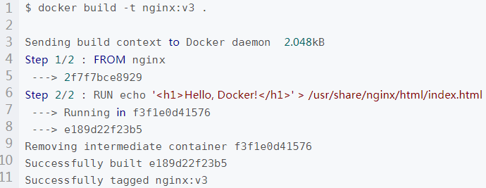
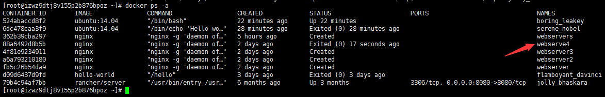

Docker的优势：
1.更高效的利用系统资源。不需要运行系统。
2.更快的启动时间。运行在主机内核。
3.一致的运行环境，持续交付和部署。
4.更轻松地拓展和维护。
docker -v ：查看Docker版本。yum remove docker-ce：卸载Docker软件包。yum remove docker docker-common docker-selinux docker-engine：卸载较老版本的 Docker。rm -rf /var/lib/docker：手动删除任何已编辑的配置文件。
docker commit：将容器的存储层保存下来成为镜像。 docker pull ： 获取镜像的命令。 docker images：查看已经下载的镜像。 查看镜像内的历史记录。docker history：查看镜像内的历史记录。
docker run：运行容器的命令 。 $docker diff：查看修改的内容。
1.以之前定制 nginx 镜像为例，这次我们使用 Dockerfile 来定制。
$ mkdir mynginx
$ cd mynginx/
$ touch Dockerfile2.添加以下内容：
FROM nginx
RUN echo '<h1>Hello, Docker!</h1>' > /usr/share/nginx/html/index.html
从命令的输出结果中，我们可以清晰的看到镜像的构建过程。在 Step 2/2 中，如同我们之前所说的那样，RUN 指令启动了一个容器 f3f1e0d41576，
执行了所要求的命令，并最后提交了这一层 e189d22f23b5，随后删除了所用到的这个容器 f3f1e0d41576。
操作Docker容器：
启动容器有两种方式：
一种：是基于镜像新建一个容器并启动，二种：是将在终止状态（stopped）的容器重新启动。
新建并启动：主要命令为：docker run。
启动一个 bash 终端，允许用户进行交互。
$ docker run -t -i ubuntu:14.04 /bin/bash
root@af8bae53bdd3:/#
root@af8bae53bdd3:/# pwd
/
root@af8bae53bdd3:/# ls
bin boot dev etc home lib lib64 media mnt opt proc root run sbin srv sys tmp usr vardocker ps ：命令可以查看正在运行中的容器
docker ps -a ：命令可以查看所有容器
docker start webserve4：启动已经终止的容器。（CONTAINER ID或 NAMES，来终止一个运行中的容器。）
可以利用 docker start 命令和上面使用 docker ps -a 查看到的 CONTAINER ID或 NAMES，直接将一个已经终止的容器启动运行。如图：

sudo docker run ubuntu:14.04 /bin/sh -c "while true; do echo hello world; sleep 1; done" ： Docker在后台运行，不打印日志到宿主机上。。/如果使用了 -d 参数运行容器，输出结果可以用docker logs 查看。
使用 -d 参数启动后会返回一个唯一的 id，也可以通过 docker ps 命令来查看容器信息。
docker logs ：获取容器的输出信息。
docker stop webserve4：终止容器。（CONTAINER ID或 NAMES，来终止一个运行中的容器。）此外，用户通过 exit 命令或 Ctrl+d 来退出终端时，所创建的容器立刻终止。
docker restart : 命令会将一个运行态的容器终止，然后再重启它。
docker rm webserve4：删除一个处于终止状态的容器。
docker rm -f webserve4：删除一个运行中的容器。
docker kill 容器id：杀死id对应容器
sudo docker rm $(sudo docker ps -a -q)：#删除所有未运行的容器（已经运行的删除不了，未运行的就一起被删除了）
进入一个容器：docker exec -it 容器ID bash。 或者 docker exec -it 容器名 bash。 例如：docker exec -it mysql-zhangl bash